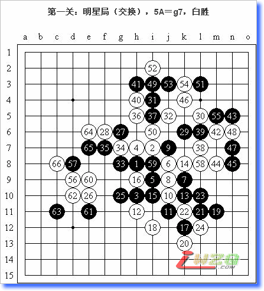
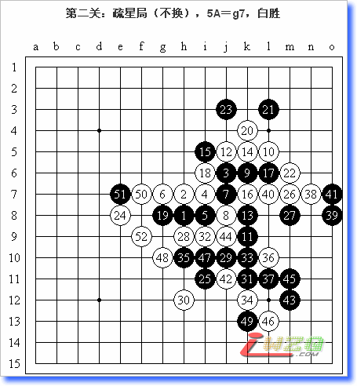

【掌棋盟】擂台邀请赛
http://www.zhangqimeng.com/viewthread.php?tid=517&extra=page%3D1
一、时间和地点：
地点： 三手一
时间： 周五晚8-11点 周六晚8-11点
二、报名：
按报名时间进行排列，先报名先攻擂，可现场报名。每个报名者攻擂和报名的名字必须一致，报名群号：10451194
三、规则：
三手交换，五手两打，比赛时间QQ三手用时。不限制开局，150手自动判和。
擂台赛共设三关，每关下一局，攻擂者获胜方能进入下一关。
四、奖励：
过两关者奖励三个月兰钻
过三关者奖励六个月兰钻
＝＝＝＝＝＝＝＝＝＝＝＝＝＝＝
本来是听说有这么一个东西，正好这个周末回家了，就想凑凑热闹。报名的时候没想到人那么多，因为只能待一天，所以有点不想下了，不过后来还是给我排到了35号，大概晚上10点多去攻擂的，之前就一直在随便下棋看棋。这个奖励对我来说毫无意义，因此我的本意就是过一关就完事，不给别人添事儿了，但这当然不是我第二关输棋的理由。我那么想，只可能是在大体的策略上有所调整，具体起来，我可以很明确地说，我正式下的每一盘棋都是倾尽全力的。过第一关之后，【掌棋盟】的组织者说时间不早了，让我明天准备攻擂，我说那我就弃权了因为明天我来不了。没想到他们很努力地又为我安排了一轮！我一直在考虑如果我第二轮也幸运地过了他们还会不会给我安排第三轮？呵呵……总之，今天的比赛，这样的组织，让我很感动。尽管有人抱怨说比赛秩序有些混乱，在QQ三手一我也的确看到一些不明确的赛程，但我看到的更是每位裁判的兢兢业业，每位擂主的努力（最后似乎还增加了一名擂主），组织者的热心，以及【掌棋盟】这个团体一心为参赛选手着想的意识和追求卓越、创一流比赛的精神！这次网络擂台邀请赛给我留下了很美好的印象！
＝＝＝＝＝＝＝＝＝＝＝＝＝＝＝
两局比赛一律为攻擂方开局。

明星局受虐的定式，我也不知道为什么让擂主鬼使神差地给了我一斜止，总之……明星局交换正常。16生硬的手段，黑棋却强攻不下。17～24研究过的手段，优势越来越小。25终于转身！26手隐含防守斜线的意思。27占据要点，原则上此时白棋应该没有什么好的路线，19以下防守的话，白棋机会也不大。但刚才右下方算杀的过程消耗了擂主大量的时间，不知是时间紧迫造成棋路不稳还是心境有变求胜欲望太强，总之是没有利用好擂台赛下“和棋”的特殊战术（这令我想起了京沪擂台赛中我的对局）。29一般，31不好，32后白棋连接颇多，26的存在总使左下方不得安宁，黑棋又没有好的牵制手段。33先阻挡，34平凡而有趣的一手，35无奈。38手以下是很想局部取胜的，但可惜一直没有机会。45小问题手，至55白棋先手右上方处理干净。56明显的好点，57――58――59――60！黑棋“无奈的失误”，以下白必胜。

疏星“和棋大定式”至23手正常，24微妙的顺序调整！平常的话25还原是必然的选择，这个25只是更加勇猛的一手而已。局部来讲这个位置确实是好点，我也很高兴完全靠临场计算来规划出以下一系列的进攻。27孤注一掷的下法，至32明显的强攻，可惜白棋反击实在太多，限于我的棋力和时间问题，即使存在必胜我也是无法走出的。以下无奈的胡乱进攻，白胜的事实已经无法改变。
本文原载于我的百度空间【复平面】（http://hi.baidu.com/%C6%C1%B1%CE/blog/item/8ba58fef08d52becce1b3eaf.html）
转载于：
百度五子棋吧（http://post.baidu.com/f?kz=282578575）
QQ五子棋吧（http://qbar.qq.com/u2006628/1812.htm）